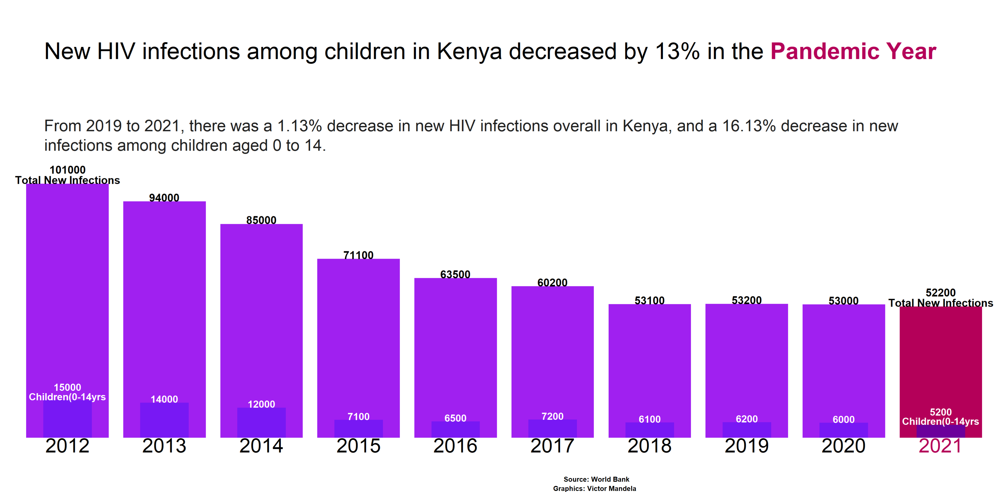

Introduction

In recent years, Kenya has made significant strides in combating HIV/AIDS, but challenges remain. Understanding trends in new infections is crucial for guiding interventions and policy decisions. This article examines the trends in new HIV infections in Kenya from 2019 to 2021, focusing on both overall and pediatric cases.

Overview of New HIV Infections: According to data from the National AIDS Control Council (NACC) of Kenya, the total number of new HIV infections in the country declined slightly from 53,200 in 2019 to 52,200 in 2021. While this represents a modest decrease of 1.13%, it signifies progress in the fight against the epidemic.
Trends Among Children: One particularly encouraging trend is the decrease in new HIV infections among children aged 0 to 14. In 2019, there were 6,200 new pediatric infections, which decreased to 5,200 in 2021, marking a notable 16.13% reduction over the two-year period.

Factors Contributing to the Decline: Several factors may have contributed to the decline in new HIV infections in Kenya. Expanded access to HIV testing and counseling services, improved maternal and child health programs, and the scale-up of prevention of mother-to-child transmission (PMTCT) interventions have likely played a role. Additionally, increased awareness, education, and community mobilization efforts have helped reduce stigma and discrimination associated with HIV/AIDS, encouraging more people to seek testing and treatment.
Challenges and Areas for Improvement: Despite the progress made, challenges persist in the fight against HIV/AIDS in Kenya. Access to comprehensive prevention services, including condoms and pre-exposure prophylaxis (PrEP), remains uneven, particularly among key populations such as sex workers, men who have sex with men, and people who inject drugs. Additionally, gaps in testing coverage and linkage to care continue to hinder efforts to achieve epidemic control.

Conclusion: In conclusion, the modest decrease in new HIV infections overall and the significant reduction among children aged 0 to 14 in Kenya from 2019 to 2021 is a testament to the country’s commitment to ending the epidemic. However, sustained efforts are needed to address remaining challenges and achieve the goal of an AIDS-free generation. By continuing to prioritize evidence-based interventions, invest in health systems strengthening, and promote equity and inclusivity, Kenya can build on its progress and move closer to ending HIV/AIDS.
Sources:
National AIDS Control Council (NACC) Kenya. (2022). Kenya AIDS Strategic Framework 2021/22 - 2025/26. Retrieved from https://nacc.or.ke
Kenya Ministry of Health. (2021). Kenya HIV Estimates Report 2021. Retrieved from https://www.health.go.ke
Attached is the r code used to generate.
## packages
library(tidyverse)
library(ggtext)
library(ggrepel)
library(patchwork)
library(systemfonts)
library(camcorder)
gg_record(dir = here::here("2024/03"), device = "png",
width = 1500 * 2, height = 1350 * 2, units = "px", dpi = 320)
theme_set(theme_minimal(base_size = 19, base_family = "Girassol"))
theme_update(
text = element_text(color = "grey12"),
axis.title = element_blank(),
axis.text.x = element_text(family = "Iosevka Curly"),
axis.text.y = element_blank(),
panel.grid.major.y = element_blank(),
panel.grid.minor = element_blank(),
plot.margin = margin(20, 5, 10, 10),
plot.subtitle = element_textbox_simple(family = "Roboto Condensed", size = 14,
lineheight = 1.6),
plot.title.position = "plot",
plot.caption = element_text(family = "Iosevka Curly", color = "#b40059", hjust = .5,
size = 10, margin = margin(35, 0, 0, 0))
)
# read the data
df <- read_csv("2024/data/new_infected_data.csv")
#prep data
df_prep <- df %>%
pivot_longer(cols = c(-Newly_infected_with_HIV)) %>%
rename(year = name,
n = value) %>%
group_by(Newly_infected_with_HIV) %>%
mutate(
total = sum(n),
current = n[which(year == 2021)]
) %>%
ungroup() %>%
mutate(
Newly_infected_with_HIV = fct_reorder(Newly_infected_with_HIV, total),
Newly_infected_with_HIV = fct_relevel(Newly_infected_with_HIV, "Young_people_(ages 15-24)")
)
# summary computation
df_sum <-
df_prep %>%
filter(year <= 2021) %>%
group_by(year) %>%
summarize(n = sum(n))
# plot
p1 <-
df_sum %>%
ggplot(aes(year, n)) +
geom_col(aes(fill = factor(year)), width = .85) +
geom_col(
data = df_prep %>% filter(Newly_infected_with_HIV == "Children_(ages 0-14)" & year <= 2021),
aes(alpha = year == 2021),
fill = "blue", width = .5
) +
geom_text(
data = df_sum %>%
mutate(n_lab = if_else(year %in% c(2012, 2021), paste0(n, "\nTotal"), as.character(n))),
aes(label = n_lab),
family = "Iosevka Curly", size = 3.3, lineheight = .8,
nudge_y = 12, vjust = 0, color = "black", fontface = "bold"
) +
geom_text(
data = df_prep %>% filter(Newly_infected_with_HIV == "Children_(ages 0-14)" & year <= 2021) %>%
mutate(n_lab = if_else(year %in% c(2012, 2021), paste0(n, "\nChildren"), as.character(n))),
aes(label = n_lab),
family = "Iosevka Curly",
color = "white", lineheight = .8, size = 3.0,
nudge_y = 12, vjust = 0, fontface = "bold"
) +
geom_text(
data = df_prep %>% filter(Newly_infected_with_HIV == "Children_(ages 0-14)" & year <= 2021),
aes(y = -15, label = year, color = factor(year)),
family = "Iosevka Curly", size = 6, hjust = .5, vjust = 1
) +
coord_cartesian(clip = "off") +
scale_y_continuous(limits = c(-15, NA)) +
scale_color_manual(values = c(rep("black", 9), "#b40059", "grey70"), guide = "none") +
scale_fill_manual(values = c(rep("purple", 9), "#b40059", "yellow"), guide = "none") +
scale_alpha_manual(values = c(.25, .4), guide = "none") +
labs(title = "<br><span style='font-size:20pt'>New HIV infections among children in Kenya decreased by 13% in the <b style='color:#b40059'>Pandemic Year</b>",
subtitle = "<br><span style='font-size:14pt'>From 2019 to 2021, there was a 1.13% decrease in new HIV infections overall in Kenya, and a 16.13% decrease in new infections among children aged 0 to 14.",
caption = paste("<br><span style='font-size:6pt'><b style='color:black'>Source: World Bank ", " ", "\nGraphics: Victor Mandela")) +
theme(
plot.title = element_markdown(size = 28, margin = margin(5, 35, 25, 35), color = "black"),
plot.subtitle = element_textbox_simple(margin = margin(5, 35, 15, 35)),
panel.grid.major = element_blank(),
axis.text.x = element_blank(),
plot.caption = element_markdown(hjust = 0.6, size = 9, lineheight = 0.8,
family = "Charm", face = "bold",
margin = margin(t = 8))
)
p1